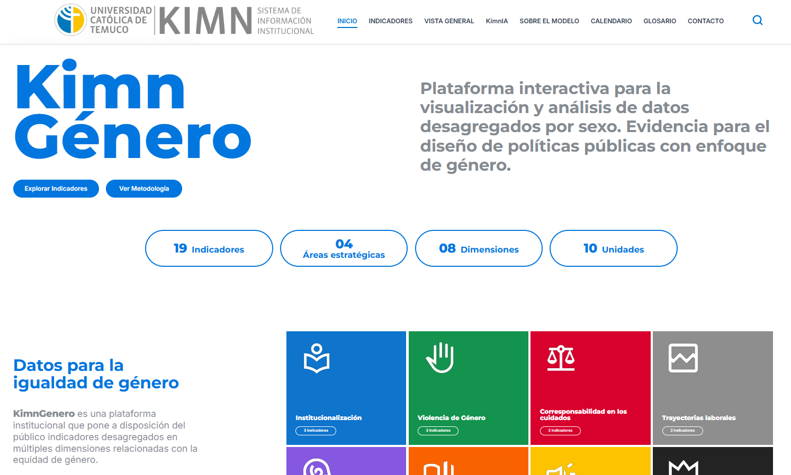
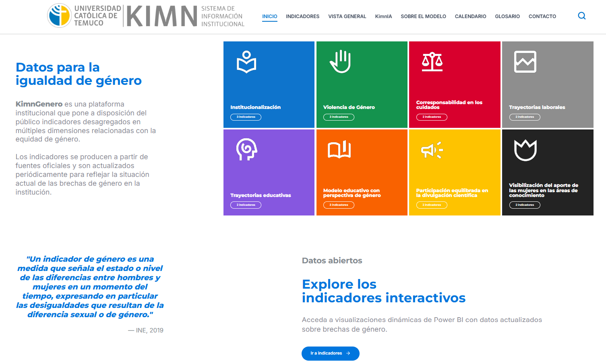

Proyectos
Aplicaciones y pipelines desarrollados en el ámbito académico y profesional
KimnGenero — Gestión de indicadores y categorías
Aplicación web full-stack desarrollada para la Universidad Católica de Temuco en el marco del proyecto ANID INGE230010. Expone indicadores institucionales y categorías vía API REST, con una interfaz React moderna para visualización y administración de datos.
Arquitectura client-server con frontend en React/Vite + TypeScript, backend Express con capa de servicios y repositorios, y tipos compartidos entre ambas capas. Incluye pipeline de datos locales, documentación técnica completa y despliegue Docker institucional.
TypeScript + pnpm
Servicios + Repositorios
shared/types
indicadores.json · Deploy
Capturas

Aplicación web KimnGeneroPipeline automatizado de boletas Transbank
Pipeline que procesa 7,912 PDFs de boletas electrónicas desde la pasarela de pagos Transbank, los transforma en un dataset gold de 8,101 registros con 28 campos, y genera un dashboard interactivo de 4 páginas para análisis de negocio hotelero.
Automatización completa desde la descarga hasta la visualización, con validación cruzada para garantizar exactitud del IVA y detección temprana de inconsistencias.
7,912 boletas
24 campos extraídos
8,101 registros gold
4 páginas interactivas
Dashboard — Hotel PulpFiction
 Panel general
Panel general

Análisis de boletas Costos
Costos
 Tendencia temporal
Tendencia temporal